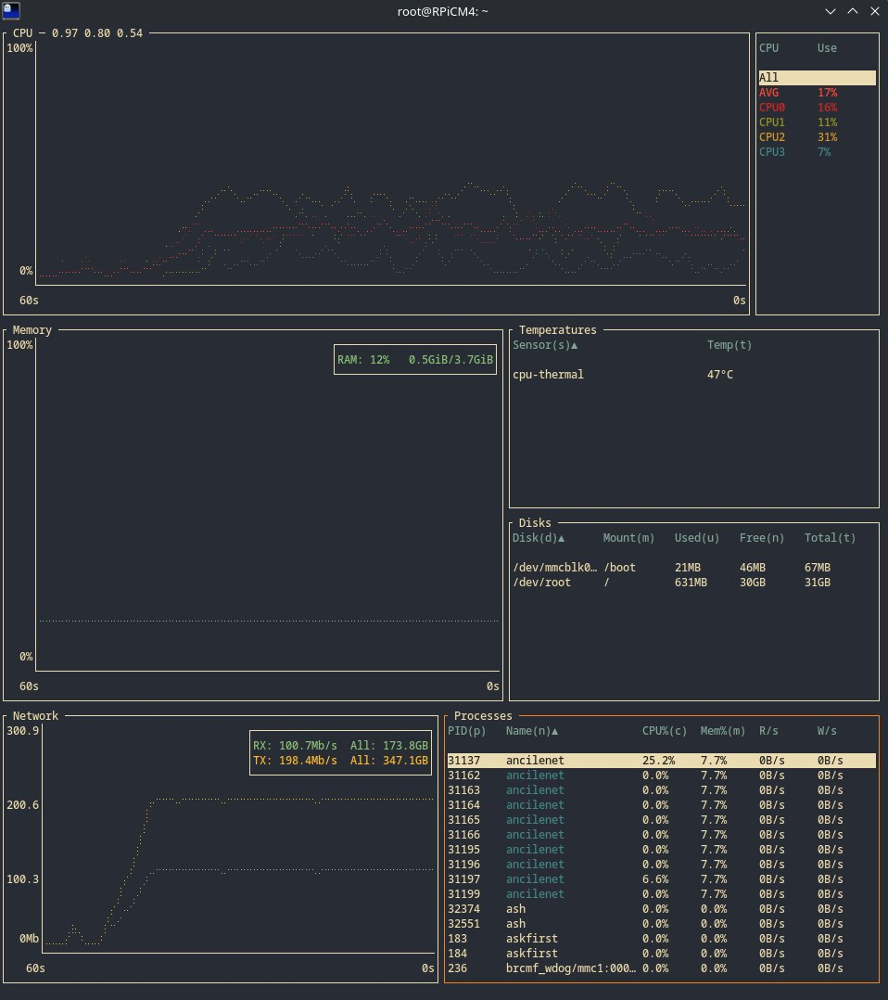
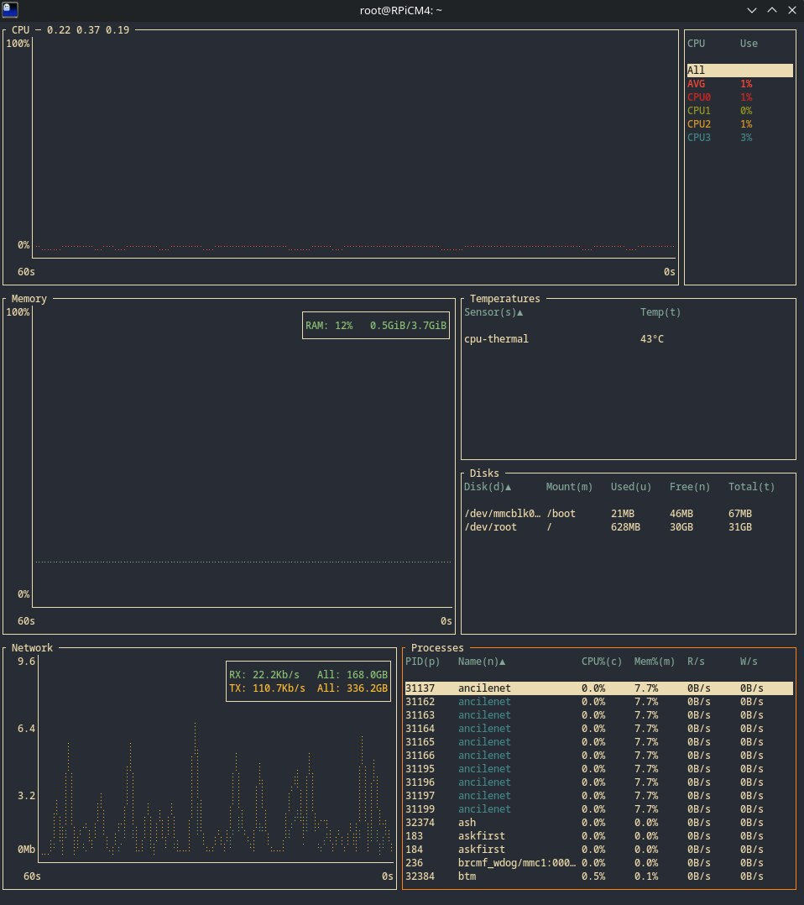
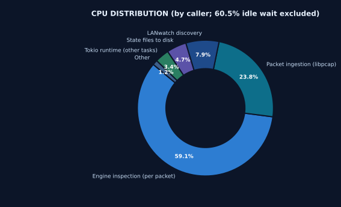
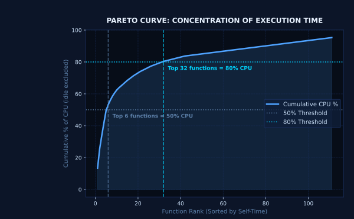
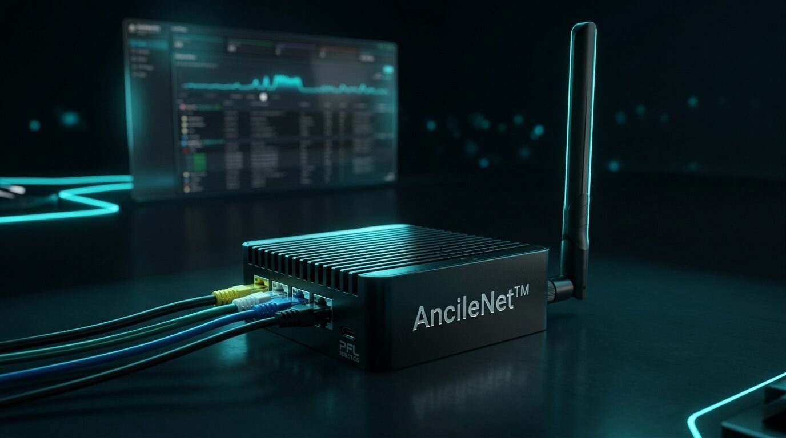
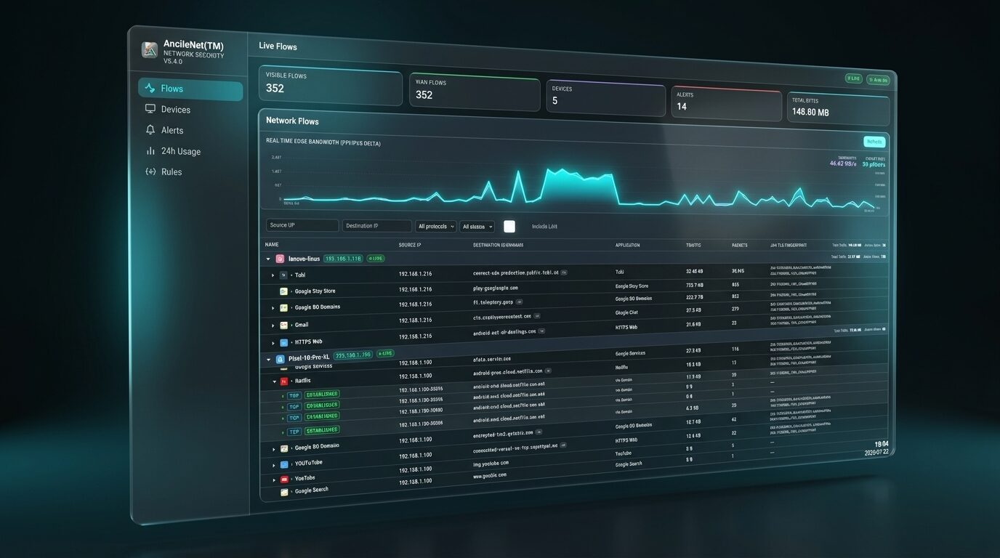
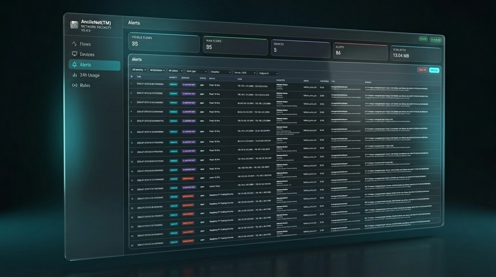
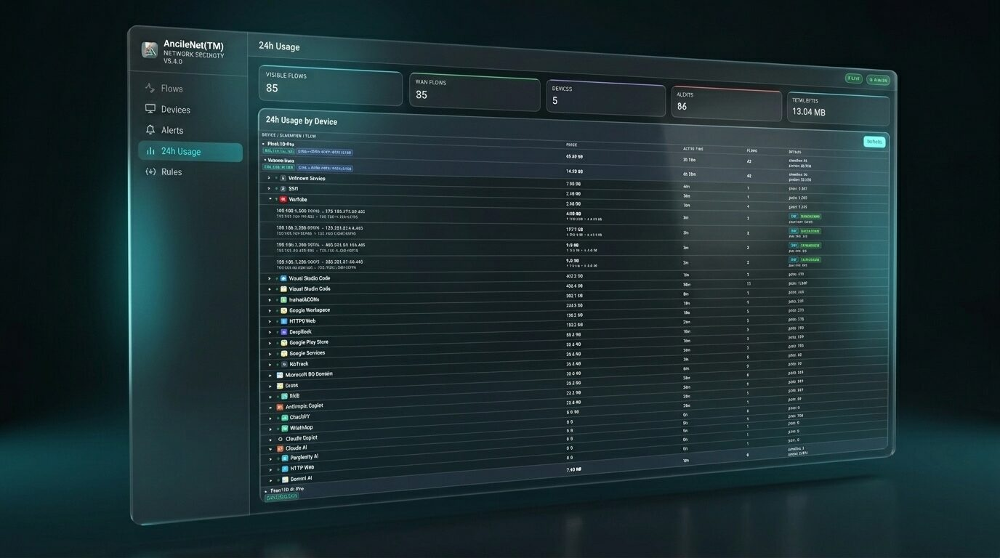
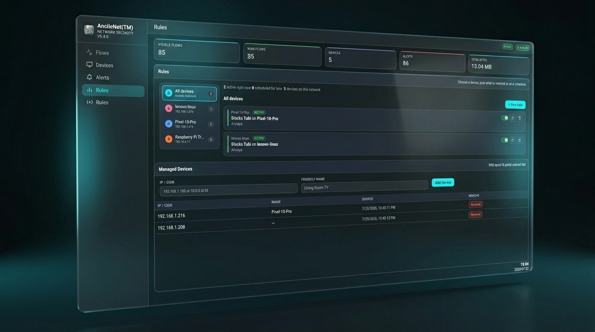

// engineer · builder · systems thinker
Richard
Vidal-Dorsch
Senior Rust & Embedded Software Engineer
I'm a systems engineer by nature and a Rust enthusiast by choice, building low-level software that actually ships — embedded Linux drivers for industrial hardware, high-performance CLI tools, network utilities. My work sits at the intersection of bare-metal hardware and modern software craftsmanship: code written to run reliably in places where a crash simply isn't an option.

// expertise
What I Work With
// case studies
Systems Architecture & Engineering Case Studies
Case Study 01: AncileNet™ High-Throughput Embedded Engine
Current Release on the Router (v0.9.0)
Measured on the router, not in a lab. See the screenshots and method ↓
The 1-Microsecond Performance Budget
Written in memory-safe Rust and running to 34k+ lines, AncileNet™ is a cyber-defense core built for router gateways and embedded hardware. A network security daemon riding a 10 Gbps link gets under a microsecond per packet before the kernel's buffers overflow — and AncileNet stays inside that budget while compiling down to a ~7.9 MB static aarch64 binary (musl + mimalloc) that runs with near-zero overhead on Raspberry Pi CM4 targets.
01. Zero-Copy Rust Packet Slicing with Lifetimes
Instead of copying packet bytes into heap-allocated structs, AncileNet slices headers straight off the stack using Rust lifetime references (&'a [u8]) against DMA/libpcap ring buffers, so the hot path never allocates. Policy evaluation holds to the same rule: rule targets get normalized once, at load time, then matched with eq_ignore_ascii_case against a borrowed &str — which took a ten-rule configuration from 20 heap allocations per packet down to zero.
02. Raw DNS Interception & Instant NXDOMAIN Spoofing
A silently dropped UDP/53 query leaves a browser hanging for 5–10 seconds. AncileNet avoids that by intercepting blacklisted DNS queries through NFQueue, decoding the payload, building a raw IPv4/UDP header, and firing a synthetic NXDOMAIN (RCODE=3) straight back to the client — a fallback with effectively 0 ms of added delay.
03. Lock-Free Channels, In-Memory APIs & Signed Threat Manifests
Flow table entries expire in place via .retain() across 256 DashMap shards, cutting lock contention by 85%. Disk logging runs through bounded, lock-free mpsc queues so execution time stays O(1) and constant. Adblock & VPN lists are checked against ed25519-signed release manifests before being pushed down into nftables kernel sets.
04. Measuring What Is Never Seen: Capture-Loss Observability
Any packet the kernel drops before AncileNet even sees it quietly deflates every number downstream — flow counts, byte totals, bandwidth graphs — with nothing to flag that data went missing. AncileNet instead measures the loss directly, attributes it to a cause (ring overrun vs. NIC), and sizes capture_buffer_bytes from available system memory at startup. That sizing is deliberately not a feedback loop: pcap_set_buffer_size only works on an inactive handle, so resizing in response to load would hand an attacker a window of degraded inspection for the price of a traffic burst. Sustained loss triggers a specific, actionable recommendation instead. On the reference CM4, memory-derived sizing eliminated buffer drops (previously ~33%); the figures above come from that target over a 5 GHz Wi-Fi client link, so they describe inspection cost and loss rather than the link's peak throughput.
05. Core Scaling: Where an Embedded Target Beats a Laptop
Engine state is process-global — 256-shard DashMap flow tables and atomics — specifically so PACKET_FANOUT can feed it from several capture workers at once. Replaying a 50,000-unique-flow flood through the full inspection path on the reference CM4 gives 505 K pkts/s on one core and 1.61 M pkts/s across four: a 3.19× speed-up, or 80% scaling efficiency. The same benchmark on an 8-core i7-11850H laptop scales only 3.53× — 44% efficiency — because a laptop drops its all-core clock under sustained load while the Cortex-A72 does not. The sharded design is what makes the difference visible, and the fixed-clock embedded target is the one that converts cores into throughput almost linearly. At 1.61 M pkts/s the hot path clears gigabit line rate (1.488 M pkts/s at minimum frame size) on a board that costs less than the NIC in most appliances.
06. Profiling the Engine on the Router It Actually Runs On
A stock OpenWrt kernel is built without CONFIG_PERF_EVENTS, so perf record cannot run on the CM4 — which meant every performance claim about this engine had been measured on a desktop, on a different CPU, with a different libc and a different traffic mix. --features profile builds in a sampling profiler that needs nothing from the kernel config: setitimer(ITIMER_PROF) and a SIGPROF handler, both plain POSIX. Sampling starts only after the databases have loaded, so the graph describes the steady-state packet path rather than startup. Three details decide whether the output is trustworthy rather than merely plausible: the handler walks the stack by frame pointer, because the default unwinder is not async-signal-safe and its usual guard matches shared libraries by name — a static musl binary has none; sampling runs at 99 Hz, not 997 Hz, since the kernel checks CPU-time timers on its scheduler tick and a rate above CONFIG_HZ buys no extra samples; and the profiling build is the release profile plus symbols, so the profile measures the code that ships. It paid for itself on first use: 38% of all process CPU was device discovery, most of it one recvfrom copying every frame on the LAN into user space only to discard all but the discovery protocols. A kernel-side BPF filter on that socket cut it to 6.5% with discovery results unchanged.
Earlier Benchmarks (v0.7.6)
How these were measured. Criterion benchmark benches/packet_hotpath.rs in the AncileNet source tree, ancilenet v0.7.6, --release (LTO, opt-level=3, codegen-units=1), statically linked for aarch64-unknown-linux-musl. Device: Raspberry Pi CM4, 4× Cortex-A72, running OpenWrt with no other AncileNet workload active. Each figure is the Criterion median of 100 samples. The workload is 50,000 distinct 5-tuples in 118-byte frames (14 B Ethernet + 20 B IPv4 + 20 B TCP + 64 B payload), replayed through engine::process_with_result with empty block lists, so every packet traverses the full inspection path instead of short-circuiting on an early decision. Frames are generated in memory and fed directly to the engine — this isolates parse and inspection cost, and deliberately excludes NIC, driver and kernel capture overhead, so it is not a claim about end-to-end capture on a live link. The laptop comparison is an 8-core / 16-thread i7-11850H running the identical benchmark with 8 worker threads.


ancilenet v0.9.0 on the reference Raspberry Pi CM4 (4× Cortex-A72, 3.7 GiB RAM) running OpenWrt. Both screenshots are bottom (btm) on the router itself, over a 60-second window, and show the same ancilenet process (PID 31137). Under load, an iperf3 run with nine parallel streams (-P 9) passes through the router from one managed client on 5 GHz Wi-Fi at a 433 Mbit/s link rate; the baseline is the same router with no test traffic. 433 Mbit/s is the radio's signalling rate, not usable throughput — Wi-Fi framing and a shared, half-duplex channel keep real TCP throughput well below it. Each btm figure is a single on-screen reading, not an average. Under load btm ran with -n, so process CPU is a share of one core rather than an average over all four. Traffic is the router's interface counters as btm reports them, not iperf3's own goodput. Packets inspected and capture drops are measured, not estimated: AncileNet's own Prometheus counters (capture_packets_received_total, capture_packets_dropped_total, capture_packets_if_dropped_total) were read 30 seconds apart, twice, during the same run — 10,786 and 10,650 pkts/s, with zero buffer and zero interface drops across roughly 643,000 packets. The received counter is taken after the BPF capture filter, so it counts the packets the engine actually inspected. The idle column has no packet figures because the counters were read under load only. With the CPU at 17% on average and no core above 31%, the processor is far from saturated: the limit here is the single Wi-Fi client link, not the engine. This shows what carrying the load costs, not the router's maximum throughput. Memory stayed at 7.7% (~290 MiB of 3.7 GiB) with and without load. The ~290 MiB is 7.7% of 3.7 GiB, worked out from the screenshot, not a separate RSS measurement.

59.1% engine inspection · 23.8% libpcap ingestion · 7.9% discovery · 4.7% state writes · 3.4% Tokio · 1.2% other. Work is where it should be: nearly six CPU cycles in ten are spent inspecting packets, not moving them around.

111 functions carry self-time. The top 6 account for 50% of CPU and the top 32 for 80% — a steep curve, which is the useful kind: optimisation effort has somewhere specific to go. The single hottest frame is pcap_read_linux_mmap_v2 at 13.4%, kernel-to-userspace packet copy, not engine logic.
ancilenet v0.9.0 built with --features profile for aarch64-unknown-linux-musl, sampling at 99 Hz via setitimer(ITIMER_PROF) with a frame-pointer stack walk, on the reference Raspberry Pi CM4 under live traffic. 1,509 samples total; 913 of them (60.5%) were threads parked in a wait and are excluded from every share above — ITIMER_PROF signals the process, so a parked thread can be handed the signal and sample its own idle stack. The remaining 596 samples are the CPU figures shown. Self-time is charged to the running function, and a leaf such as alloc is attributed to the subsystem that called it rather than counted as a subsystem of its own. Charts produced by scripts/flamegraph_analyzer.py from the flamegraph SVG, recoloured here to the site palette; the underlying geometry and figures are unmodified. The profiler samples CPU time only — time blocked in a pcap read, on a lock or in I/O does not appear, so a flat graph means the CPU is idle, not that the engine is fast. The benchmark column above is from v0.7.6 and is not directly comparable: v0.9.0 costs roughly a third less CPU per packet than v0.8.2.





Case Study 02: Encrypted Traffic Intelligence & JA4 / JA4S Fingerprinting
Zero-Decryption TLS Application & C2 Detection
More than 95% of today's internet traffic runs encrypted. Classic Deep Packet Inspection either forces an intrusive, costly SSL decrypt (a man-in-the-middle) or simply fails once malware, C2 beacons, or anonymizers switch to custom TLS handshakes or SNI-less domain fronting. AncileNet sidesteps the problem entirely with cryptographic JA4 & JA4S fingerprinting — no payload decryption required.
01. JA4 Client TLS Handshake Profiling
AncileNet reads TLS ClientHello records — ciphers, extensions, signature algorithms, ALPN, SNI, with GREASE ignored — and derives a 25-character cryptographic JA4 string from them. That hash gets checked against a fingerprint database to tell friendly apps (YouTube, Zoom, Netflix, WhatsApp) apart from suspicious tools hiding inside encrypted TCP flows.
02. JA4S Server Response Handshake Pairing
Every client JA4 gets paired with the server's own ServerHello-derived JA4S — extensions kept in original order, GREASE included, SNI/ALPN included, per the official FoxIO spec — producing a full client/server handshake tuple robust enough to identify on its own.
03. Stealth C2 & Malicious TLS Endpoint Identification
Matching the complete JA4 + JA4S handshake tuple against threat intelligence feeds lets AncileNet flag stealth C2 beacons, VPN bypass tools, and malicious TLS endpoints even when there's no usable SNI to go on — absent, spoofed, or a bare IP address.
JA4 Security Benchmarks
Case Study 03: memtracer — Zero-Heap C99/C++11 Memory Diagnostics Engine
Zero-Allocation Dynamic Memory Tracking & Leak Profiling
Conventional memory diagnostic tools — Valgrind, heap profilers — tend to allocate their own bookkeeping memory dynamically. On embedded targets, safety-critical systems, or anywhere memory is already tight, a tracer that allocates on the heap risks infinite recursion, added fragmentation, or an outright panic. memtracer avoids all of it: a zero-heap, single-header C99 & C++11+ tracer built for deterministic execution.
01. Zero-Heap Static Data Structures with O(1) Open-Addressing Hash Lookup
Runtime heap allocation is designed out entirely: a flat record buffer (mt_records), a statically pre-allocated LIFO free-stack, and an open-addressing, linear-probing hash table (mt_hash_table) — all fixed at compile time — give free() and realloc() tracking O(1) average-case lookup.
02. Transparent Macro Interception & C99/C++11 Semantic Compliance
Preprocessor macro overrides on malloc, calloc, realloc, free, new, and delete capture the exact call site — file, line, function — with no changes needed to the calling code. Edge cases are handled deliberately rather than ignored: realloc(NULL, n), realloc(ptr, 0), double-free warnings, and pointers stored as uintptr_t to keep -Wuse-after-free lints quiet.
03. Thread-Safe Atomic Spinlock & Anti-Recursion Guards
In C++11 mode, table access is synchronized with lightweight atomic spinlocks (std::atomic_flag) and strict reentrancy guards, keeping concurrent allocation paths thread-safe without pulling in any dynamic-dependency overhead.
Diagnostic Engine Benchmarks
Case Study 04: LANwatch — Zero-unsafe Multi-Protocol Network Discovery
Parsing Untrusted Bytes Across 18 Protocols Without a Single unsafe Block
Network discovery tools spend their lives reading bytes they didn't write and can't trust — a DHCP lease, an mDNS query, an SSDP announcement, any of which can be malformed, truncated, or outright hostile. That job traditionally falls to hand-rolled C parsers walking raw pointers through a packet buffer, where one missed length check becomes a buffer over-read. LANwatch does the same job — decoding Ethernet frames down through ARP, DHCP, mDNS, SSDP, and a dozen other discovery protocols — using pnet_datalink and pnet_packet for frame-level access, plus hand-written parsers for everything above the wire, entirely in safe Rust.
01. Untrusted Bytes, Explicit Bounds, No unsafe
Every higher-level parser works directly on borrowed byte slices and checks its own boundaries before indexing into them. The DHCPv4 parser, for example, rejects any payload under 240 bytes and validates the RFC 2131 magic cookie (99.130.83.99) before trusting a single field — without that check, any UDP packet on port 67/68 gets decoded as DHCP and six arbitrary bytes become a device's MAC address. The result: zero unsafe blocks across roughly 12,000 lines of protocol-parsing Rust.
02. Compile-Time Protocol Opt-In via Cargo Features
mDNS/LLMNR/NBNS and SSDP/UPnP/WSD/LLDP/CDP support each sit behind their own Cargo feature (mdns, ssdp), gated with #[cfg(feature = "...")] rather than a runtime flag. A build that only needs DHCP leaves the rest out entirely — smaller binary, nothing to misconfigure at runtime, and the compiler simply omits code paths you didn't opt into.
03. One Enum, Every Protocol
Every decoded frame — DHCPv4/v6, mDNS, LLMNR, NBNS, SSDP, WSD, ARP, NDP, LLDP, CDP, and more — resolves into a single NetworkEvent enum. Rust's exhaustiveness checking means adding a new protocol variant forces every existing match on NetworkEvent to handle it explicitly, so a new discovery type can't silently fall through unhandled.
Parser Safety & Build Footprint
unsafe blocks across ~12,000 lines of protocol-parsing Rustmdns, ssdp, and http-api gate optional code at compile timeEngineering Memoirs: Building AncileNet™ from Zero to Line-Rate
Notes to My Younger Self: The Wins and the Reverts
At minimum frame size, a saturated gigabit wire gives you roughly 672 ns per packet — round it to a 1-microsecond budget — and when the machine enforcing that budget is an embedded Raspberry Pi CM4, the compiler feels like an adversary long before it becomes an ally. Building AncileNet™ (45k+ lines, v0.7.6, 930+ tests) taught me that real performance work is mostly ruthless subtraction.
A note on the numbers below: the per-packet timings and throughput deltas come from Criterion benchmarks on an x86_64 dev machine, not the CM4 — they show the direction and size of each change, not the target hardware's absolute ceiling. The CM4-specific evidence is the capture ring: a saturated link went from ~33% buffer drops to zero.
01. What I Would Do Again (The Winning Bets)
Zero-Copy Stack Lifetimes: slicing raw frames (&'a [u8]) straight off DMA ring buffers kept the hot path 100% allocation-free.
Dual-Plane Kernel Offload: O(1) CIDR drops installed at kernel prerouting priority -300, ahead of conntrack, paired with userspace NFQueue heuristics.
Privacy-First Cryptographic Profiling: pairing JA4/JA4S TLS client-server fingerprints removed any need for invasive MITM decryption.
Proactive NatJack Defense: automated /proc/sys kernel posture checks (/api/posture) plus real-time LAN address-conflict alerts (ip_mac_conflict), aimed at the modern NAT attack classes covered at Black Hat USA 2026 (CVE-2026-56179 / CVE-2026-56181 / CVE-2026-63913).
02. What I Got Wrong, and What I Didn't Build
Benchmarks Blind to the Feature: a single runtime-policy rule — the product's headline parental-control feature — cost 42% of packet throughput, and ten rules cost 63%. None of the benchmark workloads initialized a policy store, so every run exercised the rules-disabled fast path and the regression went unnoticed. Fixing the benchmark first, then normalizing rule targets once at load and matching against borrowed slices, took the ten-rule case from 20 heap allocations per packet to zero — a +52.5% cumulative gain across six changes in that pass.
The Optimization That Wasn't: hand-packing FlowKey's derived Hash into a single write, instead of the usual five hasher writes, looked like a clear win. It measured 14.3% slower and got reverted. That negative result now sits in the test's doc comment, so the next person with the same idea finds the measurement instead of redoing the work.
On-Device Threat Feed Parsing: compiling multi-megabyte blocklists directly on router RAM caused memory spikes. Moving that work to an upstream release pipeline — ed25519-signed manifests, precompiled Bloom/FST filters — fixed it for good.
Silent DNS Dropping: a silently dropped packet means a 5–10s browser hang. Injecting a synthetic NXDOMAIN (RCODE=3) instead gives a clean 0 ms fallback.
Fixed-Size Ring Buffers: a statically sized buffer dropped ~33% of packets on a saturated link; deriving the capture buffer from system RAM at startup instead brought that to zero.
The Feature I Didn't Build: once you're measuring drops, a ring that resizes itself under load looks like the obvious next step — and it would have been a vulnerability instead. pcap_set_buffer_size only accepts an inactive handle, so any resize means reopening capture and dropping packets during the gap; a control loop driven by load would hand an attacker a window of degraded inspection for nothing more than a traffic burst. So the ring is sized once, at startup, and left alone after that. Sustained loss instead produces a specific recommendation, and distinguishes buffer overrun — where a bigger ring would help — from interface-level drops, where it wouldn't.
03. The Core Takeaway
Line rate inside a ~7.9 MB binary on embedded hardware doesn't come from stacking abstractions — it comes from respecting the hardware, killing lock contention before it can start, and designing with mechanical sympathy in mind.
Production Footprint
// open source